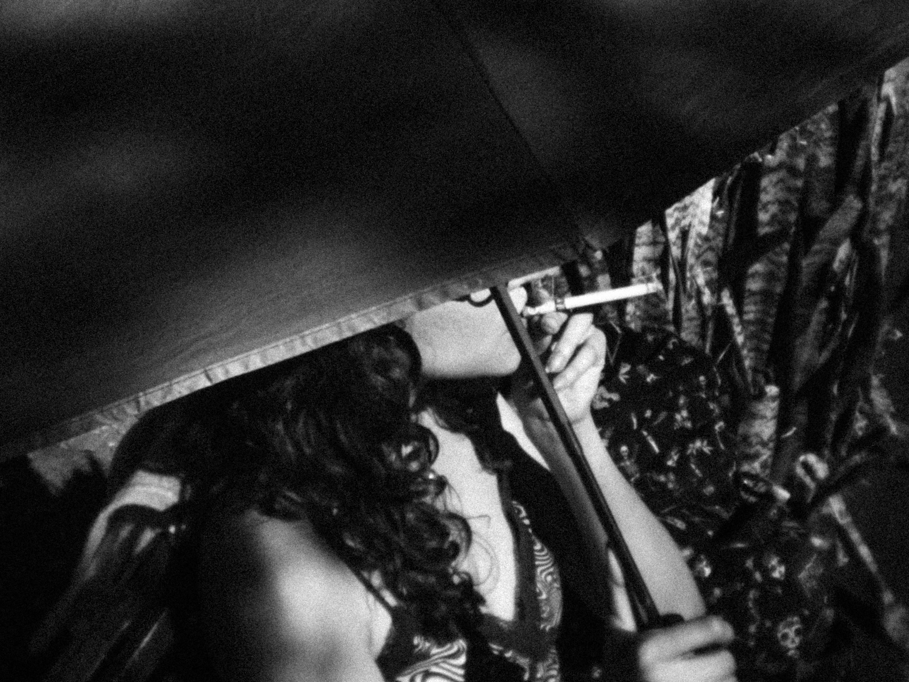
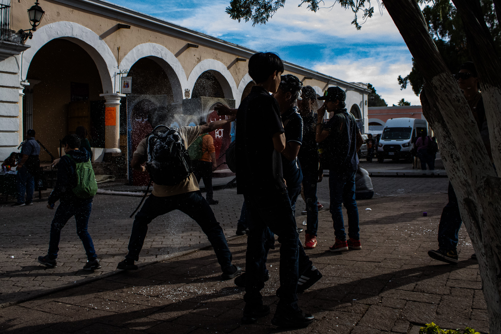
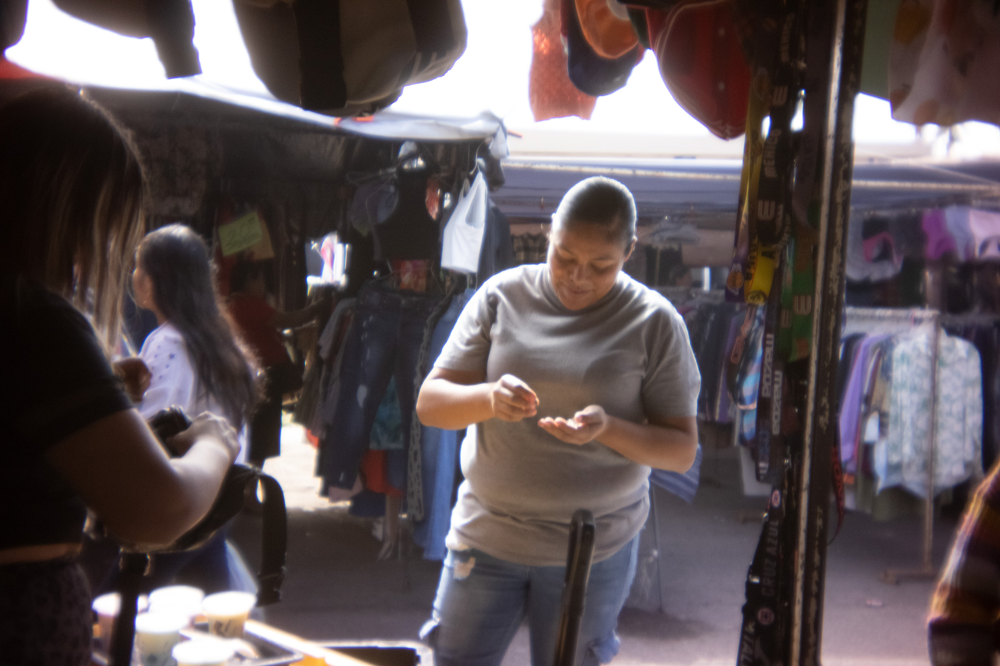
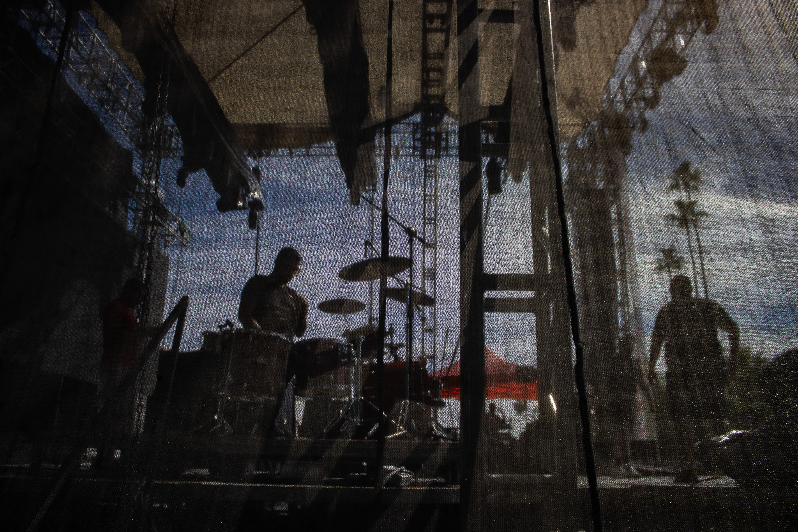
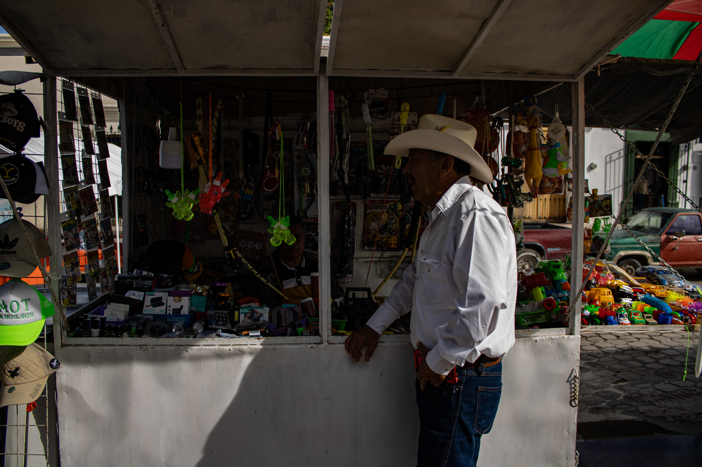
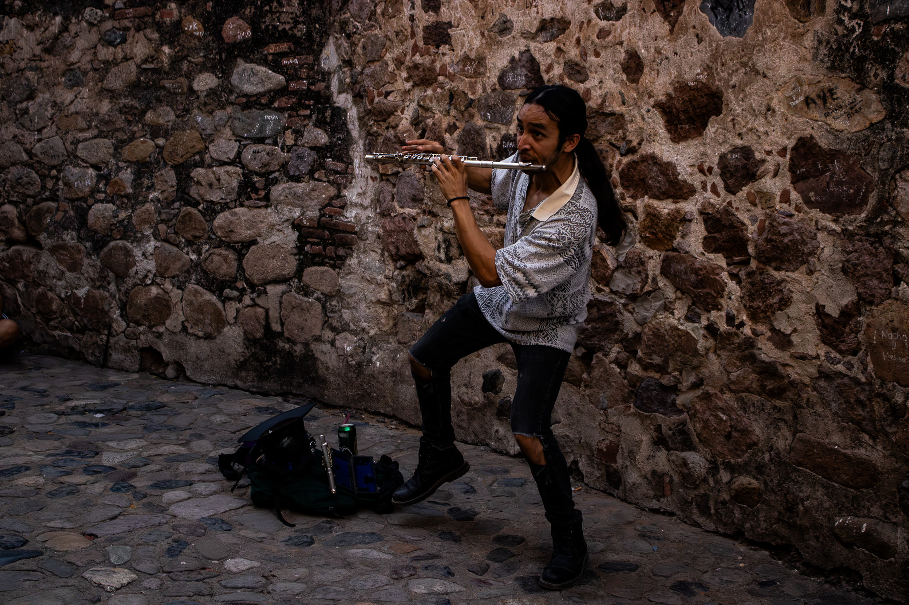

Fotografía — 2026
Fotografía
Urbana
002
La ciudad como
escenario y archivo
En la ciudad encuentras historias que no encuentras en ningún otro lugar.
Me gusta salir a caminar e intentar encontrar esas historias, capturando el momento y las emociones del momento.
Imágenes






"Cuando escucho y cuando siento la calle
Me hace pensar en algo de la vida que creo todo el mundo ha sentido, y eso es
Crecer sin darte cuenta." -Mené
Karim Carrasco